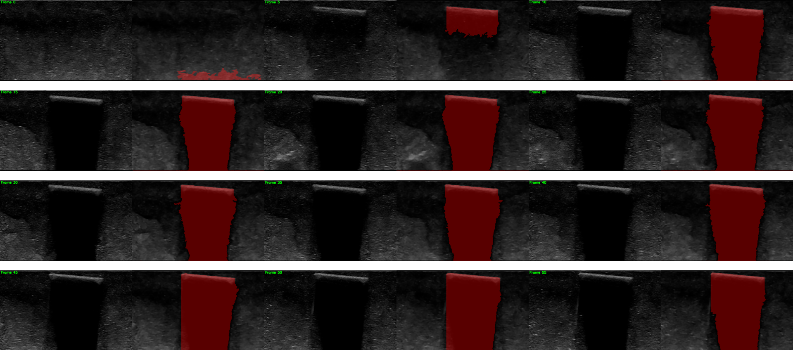
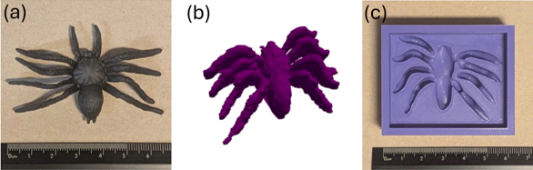
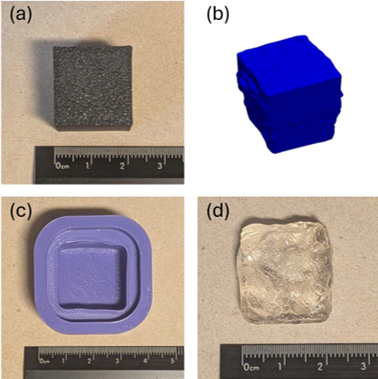
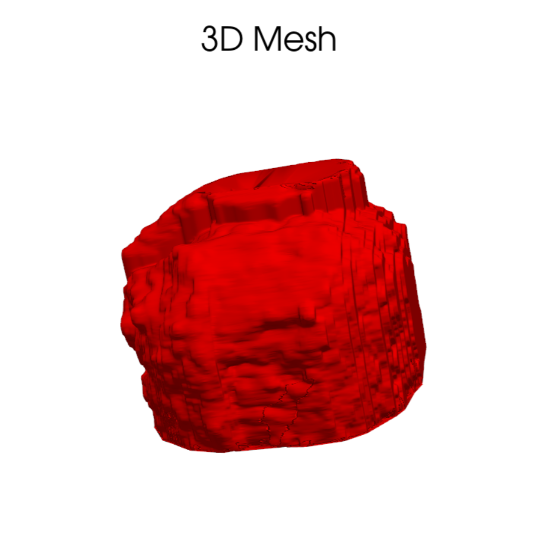
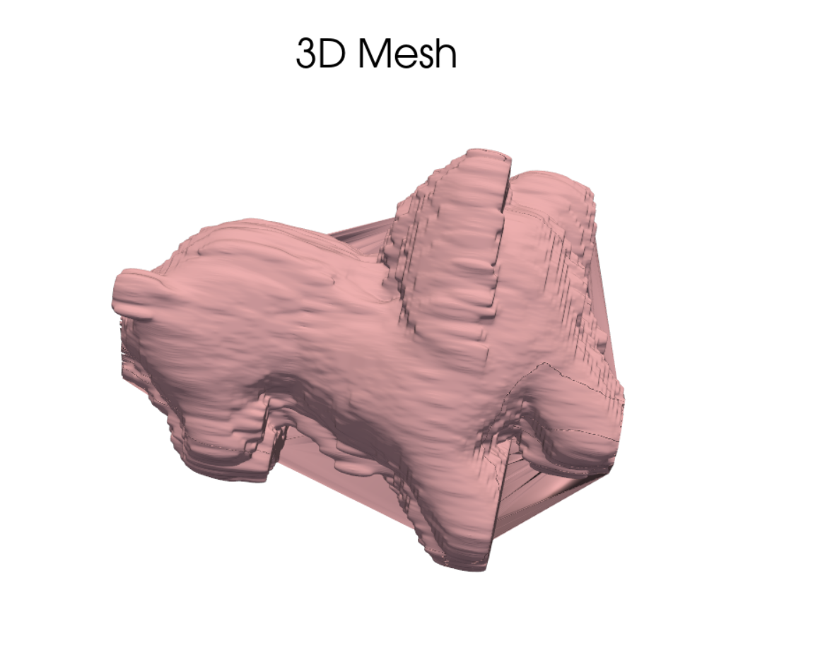
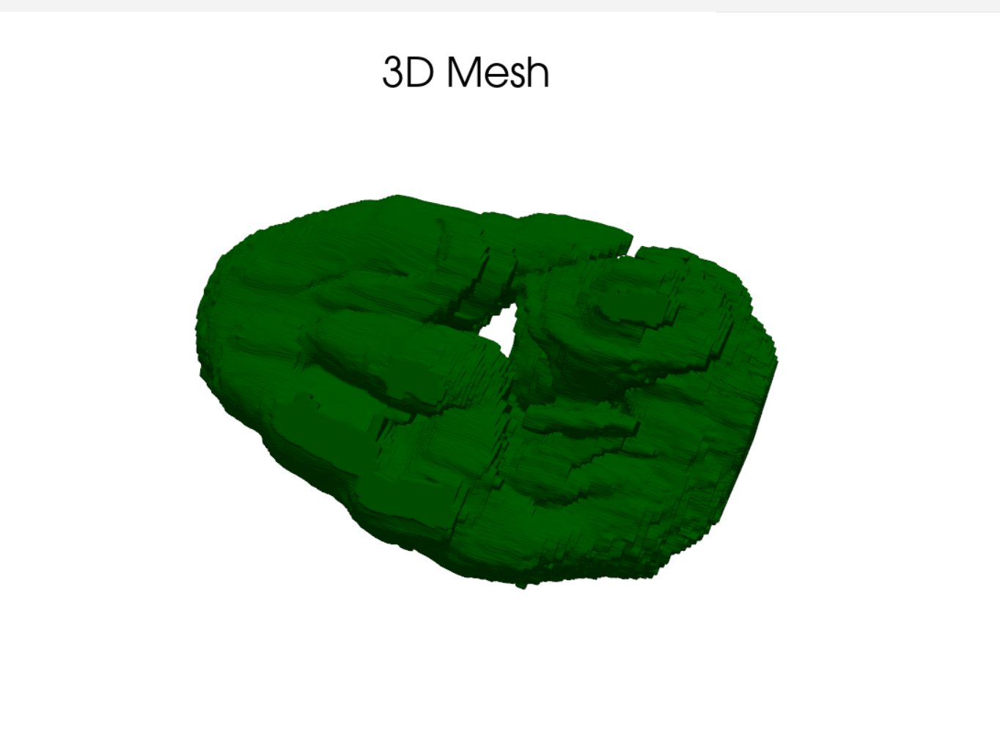

Overview
For my bachelor's thesis, I set out to answer a fairly straightforward question: can freehand 2D ultrasound images be used to create 3D models and, eventually, physical objects?
Ultrasound is relatively inexpensive, portable, and widely available. Unlike CT, it also does not use ionising radiation. The trade-off is that its images can be difficult to work with. Speckle noise, shadows, attenuation, and low contrast make it harder to extract clean geometry.
I wanted to see whether I could put together a complete workflow using accessible tools, without specialised positional tracking hardware or large machine-learning datasets. The result was a pipeline that takes ultrasound video, processes it into 3D models, and uses those models to produce physical phantom samples.
The Pipeline
The process starts with a short freehand ultrasound video. From there, the frames are extracted and cleaned, the object is segmented, and the resulting masks are stacked into a 3D volume. A surface mesh is then extracted and prepared for CAD and fabrication.
In short, the workflow goes from 2D images to a 3D volume, then to a mesh, and finally to a physical object.
Image Processing and Segmentation
I used a clinical B-mode ultrasound system with a linear transducer to scan five different objects: a cube, sphere, horse, spider, and dinosaur. Each object was embedded in a gelatin-based phantom containing psyllium husk to introduce speckle-like texture.
The scans were recorded as short videos while moving the probe by hand in different directions. I then split the videos into individual frames, cropped away the ultrasound interface, and removed blank or irrelevant frames.

Separating the object from the surrounding material was one of the more challenging parts. I experimented with Gaussian and median filtering to reduce noise, followed by intensity thresholding to isolate the object. Morphological operations were then used to clean up the masks and close small gaps.
The cube was a good starting point because its strong contrast and simple geometry made segmentation relatively reliable. Other objects required more adjustment, particularly when their surfaces were curved or their features were thin.
From 2D Images to 3D Models
Once the masks were ready, I stacked them into three-dimensional voxel volumes. Since the scans were performed freehand, I did not have an exact record of the probe's position between frames. Instead, slice spacing was estimated using calibration objects of known dimensions.
I applied volumetric smoothing to reduce noise and extracted the surface meshes using the Marching Cubes algorithm. The meshes were then cleaned up and smoothed before being exported for further use.

The spider was one of the more challenging objects to reconstruct. Its thin, flexible legs produced weaker ultrasound reflections, so some of the finer structures were lost during segmentation. The reconstructed mesh still retained the main body and general limb structure, but with less detail than the original.
Making It Physical
I also wanted to take the reconstruction one step further. Rather than stopping at a digital model, I used the geometry to design negative moulds in CAD. These were 3D printed in PLA and used to cast gelatin-based phantoms.

The cube was carried through the complete workflow, from the original object to the finished phantom. It served as a useful baseline because its flat surfaces and clear edges made it easier to evaluate the reconstruction. The resulting mesh stayed close to the original 20 × 20 mm dimensions, and the physical phantom preserved its overall shape well.
Testing Different Geometries
I tested the pipeline on five objects with different shapes and levels of detail. Each one brought its own problems, and the results were quite different.



Looking across all five objects, a pattern emerged. Simple shapes and strong ultrasound contrast generally produced better results. Curved surfaces and thin structures were harder to capture, while objects with clearer reflections retained more of their finer details.
Limitations and Takeaways
The biggest limitation was the lack of positional tracking. Since the probe was moved by hand, the exact position and orientation of each frame were unknown. Estimating slice spacing helped with physical scaling, but could not fully account for variations in scanning speed or alignment.
Segmentation was another source of uncertainty. Different objects needed different parameter adjustments, and mistakes in the masks carried through to the reconstructed volume and final mesh. Variations in the phantom material and sample preparation also affected the results.
Despite these limitations, the pipeline demonstrated that it is possible to go from freehand ultrasound images to 3D digital models and physical phantoms using relatively accessible tools. It is not a finished medical imaging system, but it provides a useful starting point for further work.
Technologies and Tools
Python · Ultrasound Imaging · Image Processing · Gaussian and Median Filtering · Intensity Thresholding · Morphological Operations · Binary Segmentation · Voxel Reconstruction · Marching Cubes · Mesh Processing · CAD · 3D Printing